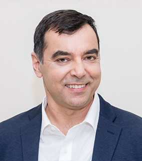

תעודת זהות
חברה מייצגת: AI21 Labs
תפקיד מרכזי: מייסד־שותף ודמות מדעית מובילה
תחום: בינה מלאכותית, ראייה ממוחשבת, מודלי שפה
Israeli AI Leader

מדען, יזם ואחת הדמויות הבולטות ביותר בתעשיית ה־AI הישראלית, מזוהה עם AI21 Labs ועם פיתוחים בתחום ראייה ממוחשבת ושפה.
חברה מייצגת: AI21 Labs
תפקיד מרכזי: מייסד־שותף ודמות מדעית מובילה
תחום: בינה מלאכותית, ראייה ממוחשבת, מודלי שפה
שעשוע מייצג את החיבור הישראלי בין מחקר אקדמי, יזמות טכנולוגית וחברות AI בעלות השפעה בינלאומית.